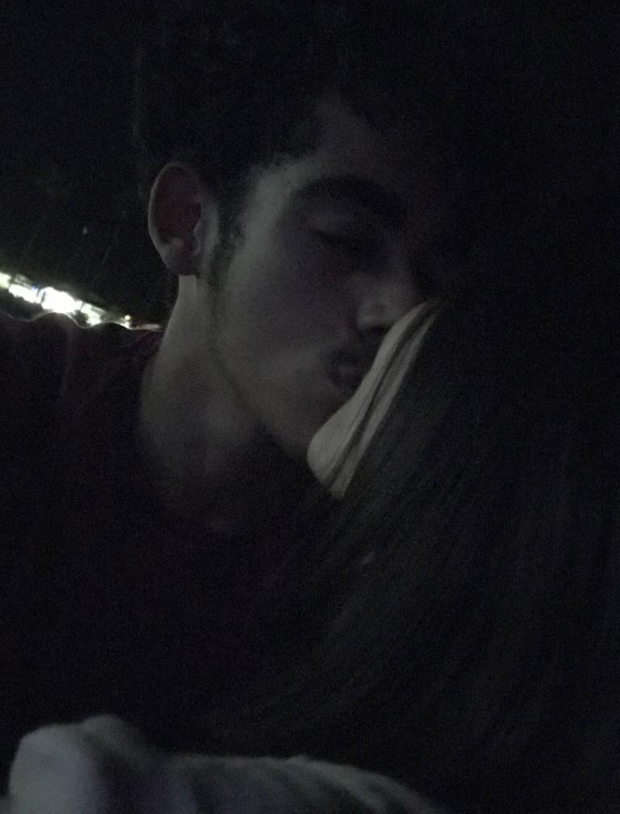

"Essa foto é o ponto de partida da linda história que eu vou poder contar pros meus netos, a história na qual o conto de fadas é real e eu sou coprotagonista. E meu amor, não sei se eu deveria te contar isso, mas na nossa caminhada eu apaguei a linha de chegada desde que você levou meu coração contigo quando levantou da cama naquela manhã linda que sucedeu uma noite da qual acho que você se lembra, não? Aquela do 'acho que estou apaixonada' e do 'é difícil falar o primeiro eu te amo, né?'
Essa imagem aqui é a primeira foto que a gente tirou se beijando, mas não por beijar, não somente boca com boca, mas sim Benício com Luiza. Uma troca não de saliva, mas de amor. Seu beijo é tão bom exatamente porque eu sinto através dele o nosso romance, nossa energia, nossa doação de um ao outro pelo simples e complexo fato de nos amarmos como jamais amamos ninguém.
Coloquei infinito no título dessa página pra simbolizar nossa relação, um amor que pode ser representado através do exato caracter no topo dessa página.
Eu me doo pra você, você se doa pra mim, eu faço o que for preciso pra te ver bem, e você faz o mesmo. Estando ambos dedicando todas as forças ao outro, entretanto nunca ficando esgotados, pois todo o amor que damos, recebemos de forma mais intensa ainda.
E hoje, minha esposa prometida, posso dizer que sou o garoto mais feliz do mundo oficialmente há três meses:

E hoje, minha esposa prometida, posso dizer que sou o garoto mais feliz do mundo oficialmente há três meses: